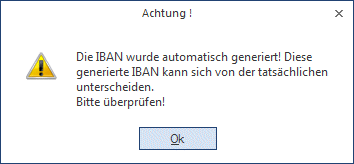

Berechtigung
Ø Berechtigung
Für jeden Bankenstammsatz kann ein Berechtigungsprofil vergeben werden. Wenn der Anwender einen Stammsatz aufruft, wird geprüft, ob der Anwender einer Benutzergruppe zugeordnet wurde, welche in dem jeweiligen Profil enthalten ist und ob somit eine Bearbeitung erlaubt wäre (nähere Informationen entnehmen Sie bitte dem WinLine ADMIN - Handbuch).
Hinweis
Benutzern des Typs "Administrator" oder mit der Administratorenberechtigung "Benutzeradministrator" steht in der Auswahlbox der Punkt ">> Neues Profil" zur Verfügung. Über die Anwahl dieses Eintrags kann in der Folge ein neues Berechtigungsprofil angelegt werden.
Ø Zeichnungsber.
Eingabe des Verantwortlichen der Auftraggeber-Firma, der für das Konto die Zeichnungsberechtigung hat, 30stellig.
Bankverbindung
Ø Bankleitzahl
Bankleitzahl des Auftraggeber-Geldinstitutes, 15stellig
Durch Drücken der F9-Taste kann nach bereits angelegten Bankleitzahlen gesucht werden. Wird eine BLZ aus dem BLZ-Match übernommen, werden automatisch die im BLZ-Stamm angelegten Stammdaten (Bankname, Ort, Straße, ...) übernommen und die Felder entsprechend ausgefüllt.
Ø Kontonummer
Auftraggeber Kontonummer, 15stellig
Eingabe der Kontonummer des Auftraggebers bei der bearbeiteten Hausbank.
Ø IBAN
Hinterlegung der IBAN zu dieser Hausbank.
Über den Button direkt neben dem Feld "IBAN" kann die IBAN automatisch generiert werden.
Wurde die IBAN generiert, sollte die IBAN überprüft werden und es kommt eine Meldung

Ø BIC
Hinterlegung der BIC zu dieser Hausbank.
Über F9 gelangen Sie in das Fenster Bankleitzahlen und können nach der BIC suchen.
FIBU
Ø Disposaldo
Eingabe des Dispositionssaldo (Betrag, über den man im Augenblick verfügen kann) für dieses Geldinstitut. Wird derzeit nicht unterstützt.
Ø Fibu Kontonr.
Eingabe der FIBU-Kontonummer des Zahlungsmittelkontos, das für die automatische Buchung der Zahlung herangezogen werden soll. Hier darf nur ein Sachkonto eingetragen werden, das im Kontenstamm als Zahlungsmittelkonto definiert wurden. Ist dies nicht der Fall, wird diese Bank beim Zahlungsverkehr abgewiesen.
Ø Kontenwährung
Aus der Auswahllistbox kann die Währung gewählt werden, in der das Bankkonto geführt wird. Diese Währung wird beim Zahlungsverkehr in V3-Format auch mit übergeben.
Nummernkreise
Ø Schecknummer
Eingabe der Startnummer des Nummernkreises, der beim Scheckdruck im Zahlungsverkehr verwendet und automatisch hochgezählt werden soll.
Werden beim Zahlungsverkehr Sachkonten-OPs erstellt, so wird die Schecknummer als Referenznummer verwendet.
Ø Überweisungsnummer
Eingabe der Startnummer des Nummernkreises, der bei Überweisungen im Zahlungsverkehr verwendet und automatisch hochgezählt werden soll.
Werden beim Zahlungsverkehr Sachkonten-OPs erstellt, so wird die Überweisungsnummer als Referenznummer verwendet.
In den FIBU-Parametern gibt es unter "Buchen (erweitert)" die Einstellung "Zahlungsverkehr"
Ø Überweisungsnummer hochzählen
ü Pro
Konto/Buchung
Die Überweisungsnummer im Bankenstamm wird pro Buchung
hochgezählt und als Belegnummer und Sachkonten-OP-Referenznummer für die
erzeugten Buchungen verwendet.
ü Pro
Zahlungsstapel
Für alle Buchungen eines Stapels wird dieselbe
Überweisungsnummer aus dem Bankenstamm als Belegnummer und
Sachkonten-OP-Referenznummer verwendet. Der Sachkonten-OP-Referenznummer wird
ein "Z-" voran gestellt.
Ø Bemerkung
Eingabe einer Bemerkung.